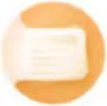

初级会计实务
初级会计实务
经济法基础
距离最近一次考试还有
172
天
考点练习

智能刷题
历年真题
模拟测试
每日一练
高频题库
考前押题
错题/收藏
智能培训
开始做题
热门试卷
《初级会计实务》热门试卷1
158504
人做过
《初级会计实务》热门试卷2
45455454
人做过
《初级会计实务》热门试卷3
677853
人做过
《初级会计实务》热门试卷4
24453
人做过
《初级会计实务》热门试卷5
846467
人做过
《初级会计实务》热门试卷6
562342
人做过
《初级会计实务》热门试卷7
234656
人做过